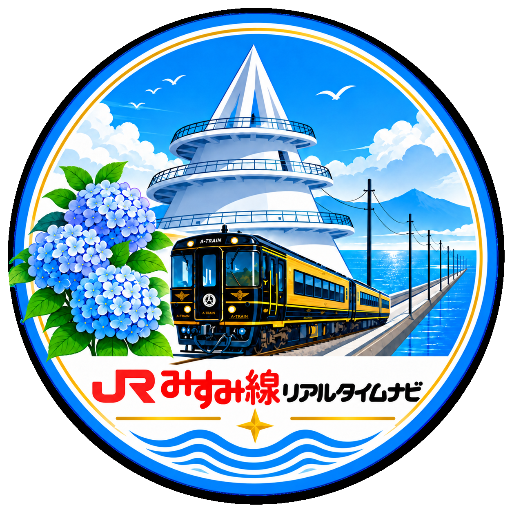

三角駅
海に面した終着駅。海と一緒に電車を待てる。

三角線 リアルタイムナビ
駅を選んで、いま走っている列車を見る
三角線 / Prototype
選んだ駅を起点に、列車位置・時刻表・イベント情報を確認できます。
※ 初期表示は三角駅〜熊本駅が収まる範囲です。アイコンで拡大・移動ができます。
海に面した終着駅。海と一緒に電車を待てる。
三角線沿線の観光イベントやおでかけ情報をご紹介します。
📅 開催日：2026年10月24日(土)・25日(日)
📍 場所：JR三角駅前・三角港フェリーターミナル周辺
地元の海の幸や人気スイーツが勢ぞろい！ジャズ演奏やワークショップも開催されます。※実際のイベントではありません
📅 開催日：令和8年11月21日（土）12時～18時（予定）
📍 場所：コメリパワー宇土店 駐車場（宇土市善道寺町）
当日は、イベント終了後の19時から会場周辺で「うと地蔵まつり花火」が開催されます。
📅 開催日：2026年11月8日(日)
📍 スタート：網田駅（おうだえき）
熊本県最古の木造駅舎「網田駅」から有明海を望む絶景コースを歩くウォーキングイベント。※実際のイベントではありません
潮の満ち引きで姿を変える、海へ続く道。